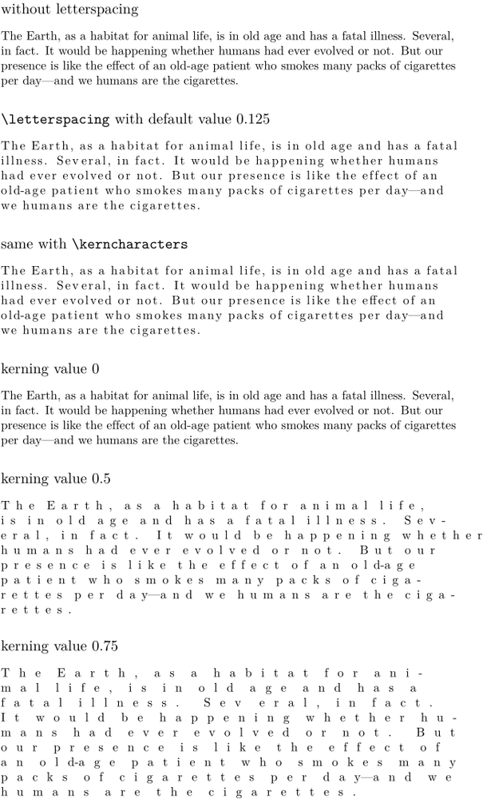
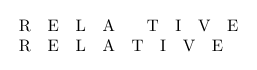

Contents
Summary
The command \letterspacing is used to highlight text with added kerning.
Settings
Description
\letterspacing
is an instance of
characterkerning
(see
\definecharacterkerning
) and an alias of
\kerncharacters
. The default value is 0.125.
Examples
Example 1
-
\setupalign[flushleft] \subject{without letterspacing} \samplefile{ward} \subject{\tex{letterspacing} with default value 0.125} \letterspacing{\samplefile{ward}} \subject{same with \tex{kerncharacters}} \kerncharacters{\samplefile{ward}} \subject{kerning value 0} \letterspacing[0]{\samplefile{ward}} \subject{kerning value 0.5} \letterspacing[0.5]{\samplefile{ward}} \subject{kerning value 0.75} \letterspacing[.75]{\samplefile{ward}}
- 
Issue that should be solved with upcoming update (current date 2025.03.18)
-
\startTEXpage[offset=1em] \letterspacing[1]{RELATIVE}\par \letterspacing[1]{\nokerning RELATIVE} % temporary solution \stopTEXpage
- 
How to keep readability ?
Source: tex.stackexchange (2025)
The kerns within words grow linearly, proportionally to the emwidth. The spaces grow faster than that. It depends on the font (for latin modern we get (em/3) + 4 * (em/3) * factor, where em is the emwidth and factor is the factor you set up).
So you can play with \spaceskip to increase the effect on spaces.
-
\setupbodyfont[ebgaramond,20pt] \starttext \startTEXpage[offset=1em] {THE GRAND DESIGN} \par \letterspacing[.16]{THE GRAND DESIGN} \par {\spaceskip=.40em \letterspacing[.16]{THE GRAND DESIGN}}\par \stopTEXpage \stoptext
Second solution, play with \setupcharacterkerning
-
\setupbodyfont[ebgaramond,20pt] \starttext \startTEXpage[offset=1em] {THE GRAND DESIGN} \par \letterspacing[.16]{THE GRAND DESIGN} \setupcharacterkerning [letterspacing] [style=\spaceskip\dimexpression{6.0\spaceamount*\characterkerningparameter{factor}+\spaceamount}] \letterspacing[.16]{THE GRAND DESIGN} \stopTEXpage \stoptext